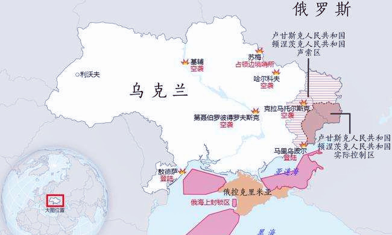
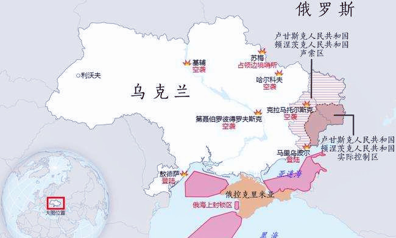

2月4日-北京冬奥会开幕
第24届冬季奥林匹克运动会（XXIV Olympic Winter Games），简称2022年北京冬季奥运会，是由中国举办的国际性奥林匹克赛事，于2022年2月4日开幕，2月20日闭幕。
2022年北京冬季奥运会共设7个大项，15个分项，109个小项。北京赛区承办所有的冰上项目和自由式滑雪大跳台，延庆赛区承办雪车、雪橇及高山滑雪项目，张家口赛区承办除雪车、雪橇、高山滑雪和自由式滑雪大跳台之外的所有雪上项目。
2021年9月17日，北京冬奥会、冬残奥会发布主题口号——“一起向未来”。10月18日，北京冬奥会火种在希腊成功点燃。10月20日，北京冬奥会火种抵达北京。11月15日，2022年冬奥会和冬残奥会主题口号推广歌曲《一起向未来》全新MV在全平台正式上线。12月31日晚，北京2022年冬奥会和冬残奥会颁奖元素正式发布。
2022年1月17日，北京冬奥组委发布北京冬奥会竞赛日程终版。1月22日，国际奥委会主席巴赫抵达北京开始相关活动。1月30日，高亭宇、赵丹担任2022年北京冬奥会中国体育代表团旗手。2月4日，第二十四届冬季奥林匹克运动会开幕式在国家体育场举行，中共中央总书记、国家主席、中央军委主席习近平出席开幕式并宣布本届冬奥会开幕。2月6日，国际奥委会主席托马斯·巴赫在北京的新闻发布会上表示，北京冬奥会创造了历史，为奥运留下了一套全新的标准，将开启全球冰雪运动新篇章。2月19日，巴赫将奥林匹克奖杯授予中国人民。2月20日，北京冬奥会闭幕。
2022年北京冬季奥运会
| 外文名 | Olympic Winter Games Beijing 2022 | 媒体转播机构 | 中央广播电视总台 |
| 举办时间 | 2022年2月4日 至 2022年2月20日 | 会 徽 | 冬梦 |
| 举办地点 | 中国北京、中国张家口 | 播出频道 | 中央电视台综合频道等 |
| 赛事类型事 | 国际体育赛 | 主办机构 | 北京2022年冬奥会和冬残奥会组织委员会 |
| 赛 区 | 北京赛区、延庆赛区、张家口赛区 | 参赛队伍 | 91支 |
| 口 号 | 一起向未来(Together for a Shared Future) | 开闭幕式总导演 | 张艺谋 |
| 吉祥物 | 冰墩墩(Bing Dwen Dwen) | 开幕式旗手 | 高亭宇、赵丹 |
| 主体育场 | 国家体育场(鸟巢) | 闭幕式旗手 | 高亭宇、徐梦桃 |
| 比赛项目 | 7大项、15个分项、109个小项 |
申办过程
2013年11月3日，中国奥委会正式致函国际奥委。中国奥委会认为，北京市和河北省张家口市具备成功举办冬奥会的自然条件和基础设施。申办2022年冬奥会，将进一步促进中国奥林匹克运动的发展，展示中国发展综合实力、提升中国国际影响力，并推动北京、河北两地的经济社会协调发展。经研究，中国奥委会正式同意以北京市名义向国际奥委会申办2022年冬奥会，由北京市承办冰上项目的比赛，河北省张家口市崇礼县承办雪上项目的比赛。中国奥委会于2013年11月3日正式致函国际奥委会，提名北京市为2022年冬奥会的申办城市。此次北京市、河北省张家口市联合申办2022年冬奥会，得到了中国政府的支持。
2014年1月17日，斯德哥尔摩（瑞典）退出申办5月，克拉科夫（波兰）退出申办。6月，利沃夫（乌克兰）退出申办。7月7日，国际奥委会在洛桑宣布了三个候选城市：奥斯陆（挪威）、阿拉木图（哈萨克斯坦）和北京（中国）。根据计划，国际奥委会将选出三个候选城市。由于只剩下三个申办城市，所以没有城市淘汰。10月1日，奥斯陆宣布放弃2022年冬奥会的申办
2015年7月31日，在马来西亚首都吉隆坡举行第128届国际奥委会全体会议上北京以44票获得举办权。北京也就此成为全球唯一一座既举办过夏季奥运会、又举办冬奥会的城市。
奖牌榜
截至2022年2月19日的所有比赛结束，挪威代表团以15金的优异战绩领跑北京冬奥会金牌榜，并成为史上单届冬奥会获得金牌数最多的代表团。北京2022年冬奥会中国体育代表团共收获9金、4银、2铜位列奖牌榜第三，金牌数和奖牌数均创历史新高。
2月6日-中国女足亚洲杯夺冠
在印度孟买举行的2022女足亚洲杯决赛中，中国队以3比2战胜韩国队，夺得冠军。
决赛概述
第27分钟，韩国队发起反击。李玟·金右路传中，崔佑利中路突破，韩国队1-0领先。
上半场补时阶段，队姚在禁区内持球。看完VAR，裁判判了点球。韩国队的池用右脚打入点球，韩国队以2-0领先结束上半场。
第68分钟，中国队张的射门导致韩国球员手球，中国女足获得点球。唐佳丽罚球命中，将比分扳成1-2平。
第72分钟，中国队唐佳丽右路突破传中，张头球破门。中国队将比分扳成2比2平
第93分钟，中国队小攻入制胜一球，中国队逆转夺冠。
2月24日-俄乌冲突开始
2022年2月15日，随着俄罗斯国防部高调宣布撤回部分部署在俄乌边境、此前正在参与大规模军事演习的陆上部队，从2021年10月起持续至2022年2月的乌克兰东部危机，似乎呈现出了缓慢降温的趋势。
2022年2月17日，乌东部地区局势恶化，乌政府和当地民间武装相互指责对方在接触线地带发动挑衅性炮击。2月18日，乌东部民间武装宣布，因存在乌克兰发起军事行动的危险，自即日起向俄罗斯大规模集中疏散当地居民。2月21日晚，俄罗斯总统普京签署命令，承认乌克兰东部的“顿涅茨克人民共和国”和“卢甘斯克人民共和国”。
2022年2月24日，乌克兰管理部门宣布关闭全国领空，乌克兰总统泽连斯基表示，乌克兰全境将进入战时状态，首都基辅地铁免费开放，地铁站将作为防空洞使用；俄军开始对乌军东部部队和其他地区的军事指挥中心、机场进行炮击。乌克兰国民卫队司令部被摧毁。2月24日，乌克兰宣布与俄罗斯断交。2月24日，乌克兰边防部队称俄军突入基辅地区。当地时间2月24日，乌克兰基辅市政府发出防空警报，通知所有人立即前往民防避难所避难。当地时间26日，乌克兰基辅市市长宣布，该市地铁转为避难所，不再提供运输服务。3月2日，乌克兰已经关闭其驻俄罗斯圣彼得堡的总领馆。13日清晨，俄军对利沃夫州亚沃洛夫斯基训练场的空袭共造成9人死亡，57人受伤。5月3日，俄军摧毁一处美欧援乌军火库，内部存放导弹和无人机。
 
